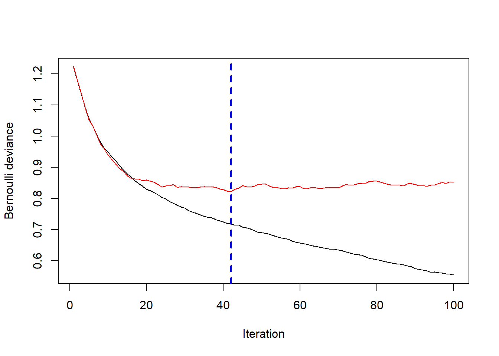
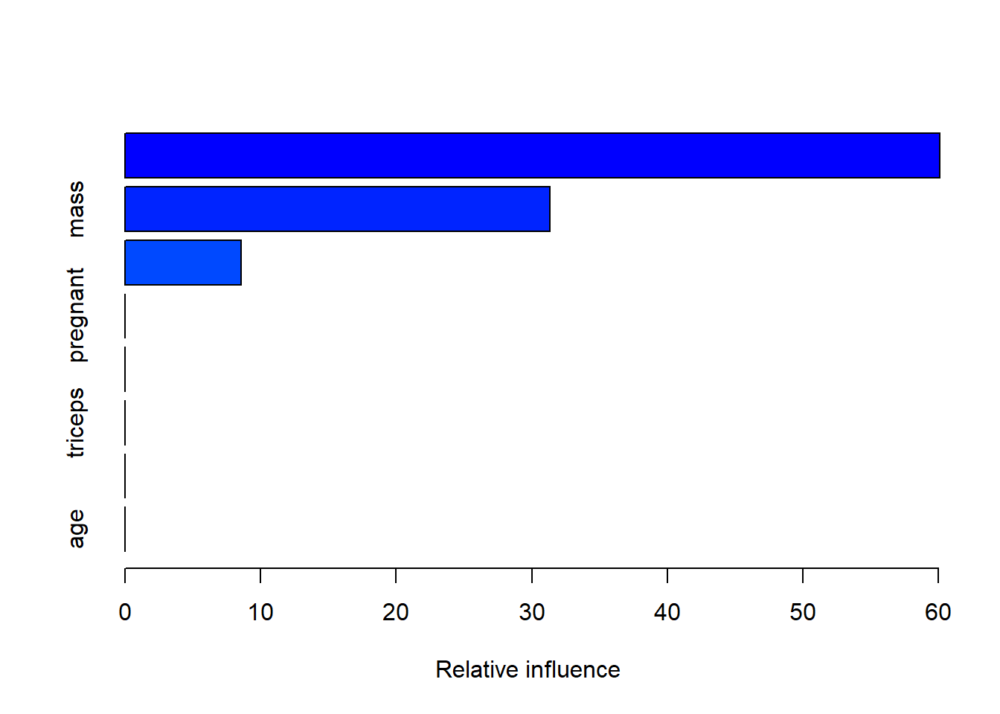
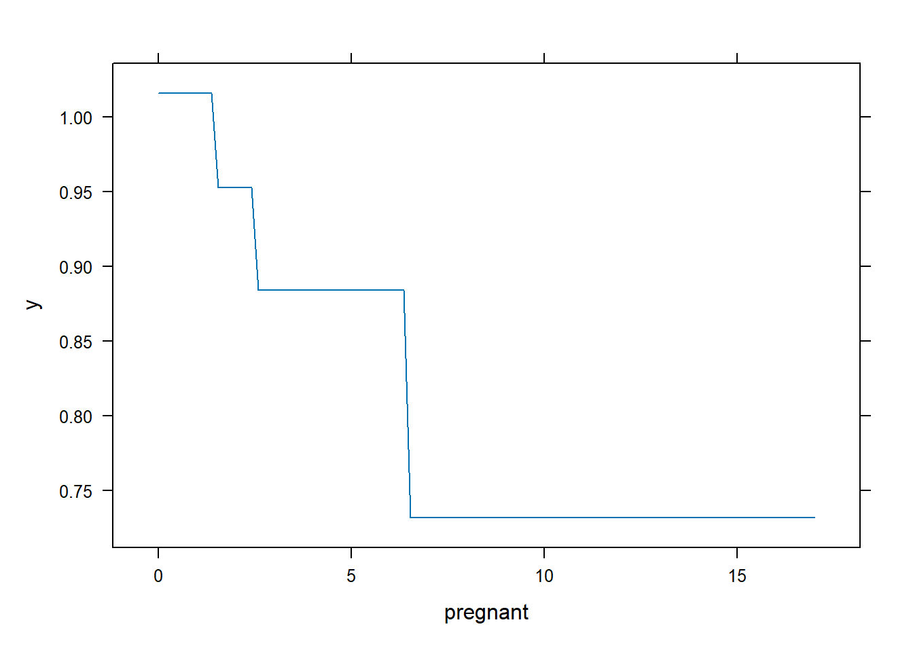
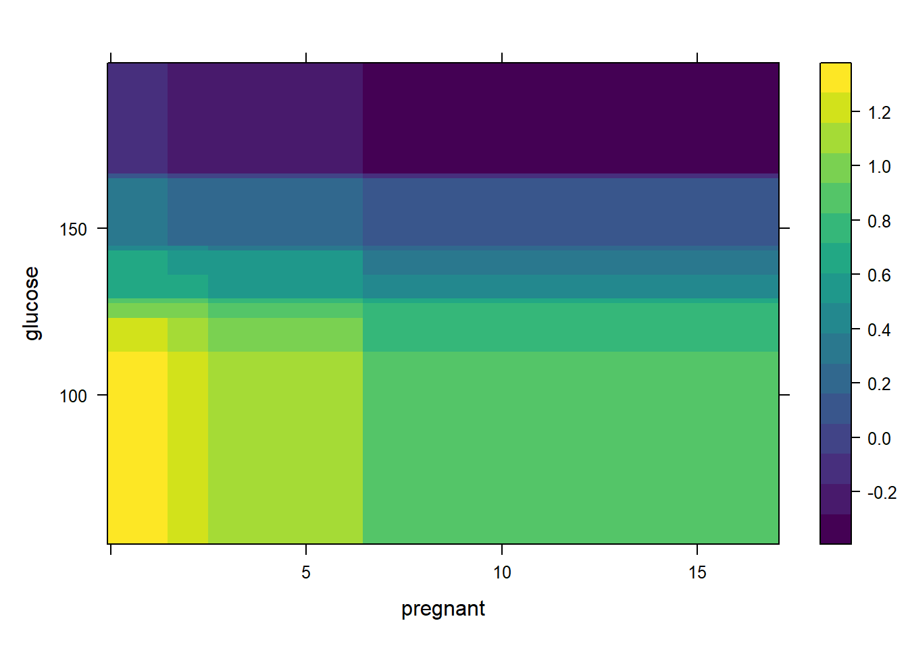
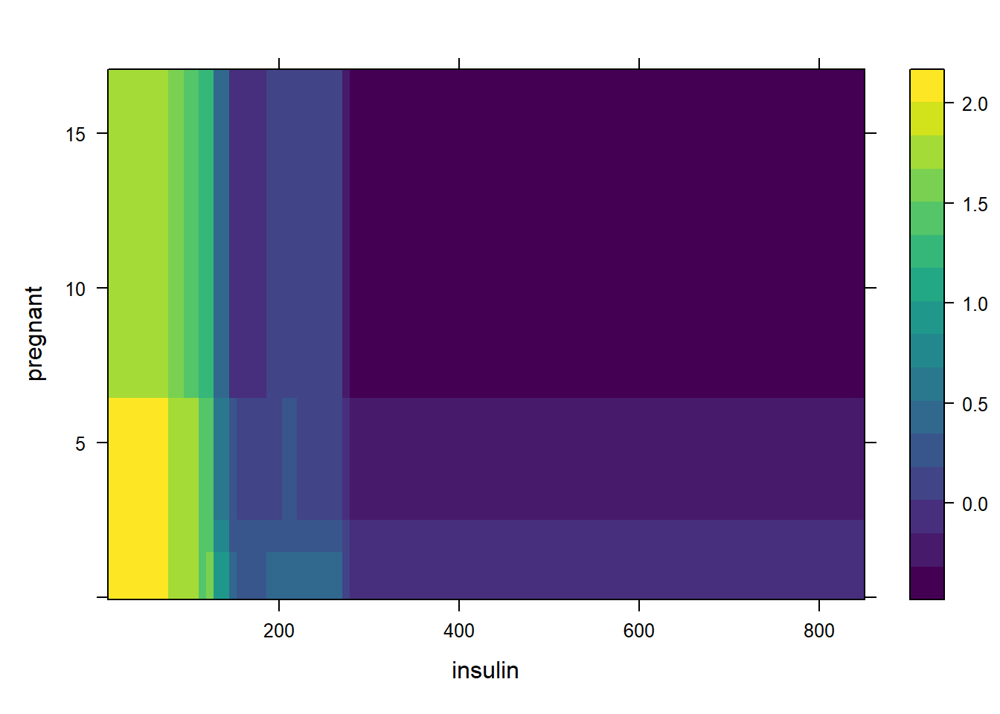
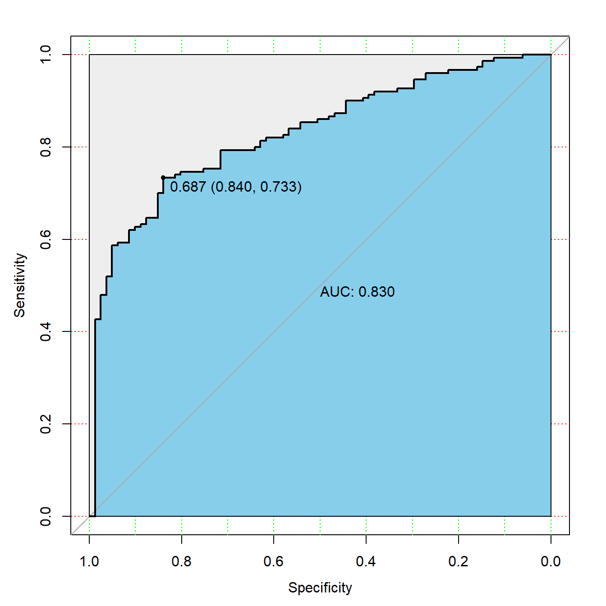

install.packages("gbm")21 梯度提升机GBM
提升法（boosting）是三大集成方法之一（另外两种是袋装法bagging和堆叠法stacking），提升法发展出了非常多的分支，梯度提升（gradient boosting）就是其中一种。GBM就是基于梯度提升实现的一种算法。
GBM（Gradient boosting machines）的参数主要是两类，
- 和提升法有关的参数：
- 树的数量（number of trees）
- 学习率（learning rate）
- 和树模型有关的参数：
- 树的深度（tree depth）
- 叶子节点的最小样本量（Minimum number of observations in terminal nodes）
在R中有非常多的R包可以实现GBM以及由GBM发展而来的其他模型，其中最著名的是gbm包。
但是目前gbm包已经停止更新了,新的项目是gbm3,但是今天还是主要讲解下gbm的用法.
21.1 安装
21.2 准备数据
使用皮玛印第安人糖尿病数据集。这个一个分类数据,其中diabetes是结果变量,pos表示有糖尿病,neg表示没有糖尿病,gbm要求结果变量必须用数字1和数字0表示,不能是字符型或者因子型,所以我们改一下,并按照7:3的比例划分训练集和测试集:
rm(list = ls())
load(file = "datasets/pimadiabetes.rdata")
pimadiabetes$diabetes <- ifelse(pimadiabetes$diabetes=="pos",1,0)
# 划分是随机的，设置种子数可以让结果复现
set.seed(123)
ind <- sample(1:nrow(pimadiabetes), size = 0.7*nrow(pimadiabetes))
# 去掉真实结果列
train <- pimadiabetes[ind,]
test <- pimadiabetes[-ind,]
dim(train)
## [1] 537 9
dim(test)
## [1] 231 9
head(train)
## pregnant glucose pressure triceps insulin mass pedigree age diabetes
## 415 0 138 60 35.00 167.00 34.6 0.534 21 0
## 463 8 74 70 40.00 49.00 35.3 0.705 39 1
## 179 5 143 78 37.17 262.21 45.0 0.190 47 1
## 526 3 87 60 18.00 69.59 21.8 0.444 21 1
## 195 8 85 55 20.00 80.76 24.4 0.136 42 1
## 118 5 78 48 30.96 76.57 33.7 0.654 25 121.3 拟合模型
首先加载R包:
library(gbm)
## Loaded gbm 2.1.8.1该包的默认学习率（shrinkage）是0.001，学习率越小，需要的树的数量就越多，但是默认的树的数量（n.trees）是100，这个数量是偏小的。默认的树的深度（interaction.depth）是1。
下面我们建立一个gbm模型，注意因变量需要是0/1这种数值型：
set.seed(123)
gbm1 <- gbm(
formula = diabetes ~ .,
data = train,
distribution = "bernoulli", # 回归数据选"gaussian"
n.trees = 100,
shrinkage = 0.1,
interaction.depth = 3,
n.minobsinnode = 10,
cv.folds = 10,
train.fraction = 0.7
)
gbm1
## gbm(formula = diabetes ~ ., distribution = "bernoulli", data = train,
## n.trees = 100, interaction.depth = 3, n.minobsinnode = 10,
## shrinkage = 0.1, train.fraction = 0.7, cv.folds = 10)
## A gradient boosted model with bernoulli loss function.
## 100 iterations were performed.
## The best cross-validation iteration was 29.
## The best test-set iteration was 42.
## There were 8 predictors of which 8 had non-zero influence.结果表明,交叉验证法的最佳的树的数量是29,测试集法的最佳的树的数量是42.
21.4 结果探索
gbm1$fit是训练集的结果,但是并不是直接的类别或者预测概率,对于不同的distribution有不同的含义,可查看帮助文档?gbm.object
head(gbm1$fit)
## [1] -0.5306145 1.4316161 0.3399815 4.7168734 3.5942364 3.1978575
length(gbm1$fit)
## [1] 537gbm.perf可用于展示模型性能随树的数量的变化趋势,首先看看使用测试集的结果:
# 使用0.3的测试集,train.fraction = 0.7
best.iter <- gbm.perf(gbm1, method = "test")
print(best.iter)
## [1] 42此时最佳的树的数量是42.
再看看使用交叉验证法的情况:
# plot error curve
best.iter <- gbm.perf(gbm1, method = "cv")
print(best.iter)
## [1] 29此时最佳的树的数量是29.
再看看使用袋外数据的情况,结果中还贴心的给出了提示:
best.iter <- gbm.perf(gbm1, method = "OOB")
## OOB generally underestimates the optimal number of iterations although predictive performance is reasonably competitive. Using cv_folds>1 when calling gbm usually results in improved predictive performance.
print(best.iter)
## [1] 18
## attr(,"smoother")
## Call:
## loess(formula = object$oobag.improve ~ x, enp.target = min(max(4,
## length(x)/10), 50))
##
## Number of Observations: 100
## Equivalent Number of Parameters: 8.32
## Residual Standard Error: 0.001453summary.gbm可用于计算每个变量的相对影响,还可以画图:
summary(gbm1, n.trees = 1) # 使用1棵树
## var rel.inf
## insulin insulin 60.089053
## mass mass 31.326700
## glucose glucose 8.584247
## pregnant pregnant 0.000000
## pressure pressure 0.000000
## triceps triceps 0.000000
## pedigree pedigree 0.000000
## age age 0.000000结果显示insulin/mass/glucose这3个变量影响最大.
再看看使用最佳树的数量:
summary(gbm1, n.trees = 29) 
## var rel.inf
## insulin insulin 34.840225
## glucose glucose 19.775059
## mass mass 17.649108
## age age 9.711670
## pedigree pedigree 8.577304
## triceps triceps 4.217389
## pregnant pregnant 3.155696
## pressure pressure 2.073551可以看到变量的影响发生了一些变化,但是最重要的前3个还是没变.
pretty.gbm.tree函数可以提取每棵树的具体信息,但其实作用不大,帮助文档也说这个函数主要是为了debug和满足某些用户的好奇心!
print(pretty.gbm.tree(gbm1, i.tree = 1)) # 选择第一棵树
## SplitVar SplitCodePred LeftNode RightNode MissingNode ErrorReduction Weight
## 0 4 145.010000000 1 5 9 12.204767 187
## 1 1 128.500000000 2 3 4 1.743558 100
## 2 -1 0.125744043 -1 -1 -1 0.000000 83
## 3 -1 -0.030029028 -1 -1 -1 0.000000 17
## 4 -1 0.099262621 -1 -1 -1 0.000000 100
## 5 5 29.100000000 6 7 8 6.362808 87
## 6 -1 0.124742981 -1 -1 -1 0.000000 16
## 7 -1 -0.184594521 -1 -1 -1 0.000000 71
## 8 -1 -0.127704866 -1 -1 -1 0.000000 87
## 9 -1 -0.006331878 -1 -1 -1 0.000000 187
## Prediction
## 0 -0.006331878
## 1 0.099262621
## 2 0.125744043
## 3 -0.030029028
## 4 0.099262621
## 5 -0.127704866
## 6 0.124742981
## 7 -0.184594521
## 8 -0.127704866
## 9 -0.006331878直接对gbm使用plot方法竟然是画出某个变量的部份依赖图(partial dependence plots,PDP)!
PDP是一种模型解释方法，我专门写文章介绍过，可参考合集：R语言模型解释
比如我们画一下第一个变量的部份依赖图,展示了pregnant这个变量对结果变量的贡献.
plot(gbm1, i.var = 1, n.trees = 29)
也可以直接使用变量的名字:
plot(gbm1, i.var = "insulin", n.trees = 29)
还可以同时展示两个变量的部分依赖图,比如选择前两个变量:
plot(gbm1, i.var = 1:2, n.trees = best.iter)
或者直接使用变量名称:
plot(gbm1, i.var = c("insulin", "pregnant"), n.trees = 29)
还可以同时展示3个变量:
plot(gbm1, i.var = c(1, 2, 6), n.trees = 29,
continuous.resolution = 20)
21.5 测试集预测
predict.gbm用于对新数据进行预测,返回预测向量。默认情况下，返回的结果为f(x)。 例如，如果distribution选择伯努利，返回值是log-odds，而coxph则采用log-hazard,如果是泊松分布也是返回log尺度的值.
type="response"只对伯努利分布和泊松分布有效,如果是伯努利则返回类别概率,如果是泊松分布则返回预期计数。
我们这个数据是二分类，所以distribution选择伯努利，此时我们可以计算预测概率：
# 返回概率
pred <- predict.gbm(gbm1, newdata = test,
n.trees = 29,
type = "response")
head(pred)
## [1] 0.25366710 0.59607364 0.93003304 0.09244194 0.57341071 0.44773319随手画个ROC曲线，就是需要真实结果和预测概率而已！
library(pROC)
# 提供真实结果，预测概率
rocc <- roc(test$diabetes, pred)
rocc
##
## Call:
## roc.default(response = test$diabetes, predictor = pred)
##
## Data: pred in 81 controls (test$diabetes 0) < 150 cases (test$diabetes 1).
## Area under the curve: 0.8299
plot(rocc,
print.auc=TRUE,
auc.polygon=TRUE,
max.auc.polygon=TRUE,
auc.polygon.col="skyblue",
grid=c(0.1, 0.2),
grid.col=c("green", "red"),
print.thres=TRUE)
我们可以自己把概率转换为类别,比如规定概率大于0.5就是类别1,否则就是类别2:
pred_type <- ifelse(pred > 0.5,1,0)
head(pred_type)
## [1] 0 1 1 0 1 0这样就可以得到混淆矩阵以及其他指标了:
caret::confusionMatrix(factor(test$diabetes), factor(pred_type))
## Confusion Matrix and Statistics
##
## Reference
## Prediction 0 1
## 0 46 35
## 1 24 126
##
## Accuracy : 0.7446
## 95% CI : (0.6833, 0.7995)
## No Information Rate : 0.697
## P-Value [Acc > NIR] : 0.0647
##
## Kappa : 0.4211
##
## Mcnemar's Test P-Value : 0.1930
##
## Sensitivity : 0.6571
## Specificity : 0.7826
## Pos Pred Value : 0.5679
## Neg Pred Value : 0.8400
## Prevalence : 0.3030
## Detection Rate : 0.1991
## Detection Prevalence : 0.3506
## Balanced Accuracy : 0.7199
##
## 'Positive' Class : 0
## 21.6 超参数调优
GBM对各种超参数很敏感，比随机森林的调参更加复杂，
通常的调参策略：
- 先选择一个相对较高的学习率。一般来说，默认值0.1就可以了，但是建议在0.05和0.2之间尝试。
- 确定此学习率下树的最佳数量。
- 在固定树的数量的情况下，再尝试微调学习率，便于在速度与性能之间取得平衡。
- 调整树相关的参数以确定学习率。
- 确定树相关的参数后，适当降低学习率以评估准确性有无改进。
- 使用最终的超参数设置和增加交叉验证的折数来获得更稳健的估计。
我们可以自己写for循环实现,也可以借助caret/mlr3实现,tidymodels暂不支持gbm引擎.
由于梯度提升模型有更多更好的选择,比如xgboost/lightgbm等,所以我们就不详细演示gbm的调优了,感兴趣自己试一下即可.